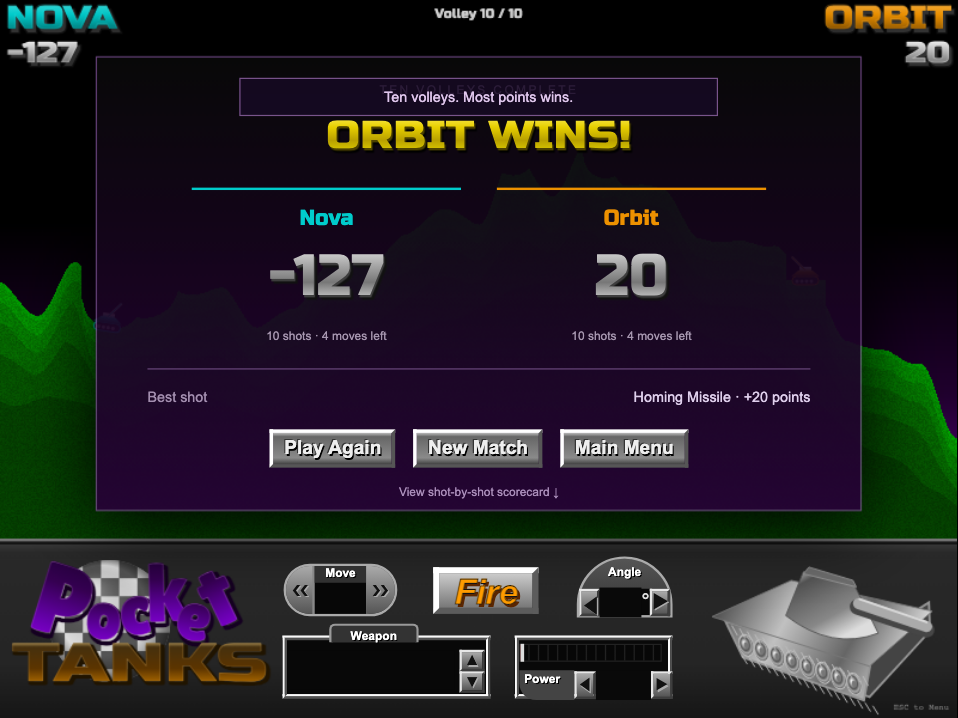
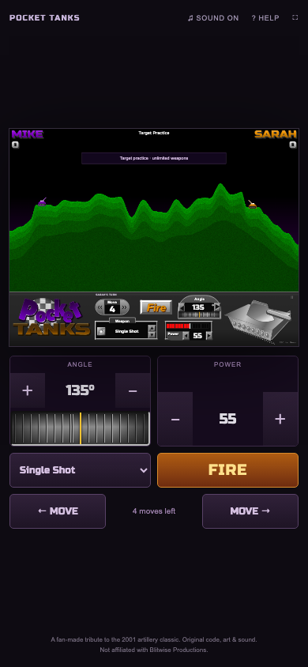

New: animated movement, live angle wheel and two-device room codes → · The six scored final frames below preserve the first release. The update report includes a current reference pair and its own rubric.
Six real reference frames, three visual passes. The left image is Blitwise’s classic PC screenshot; the right is our running web remake. Final weighted scores range from 8.1 to 8.4 / 10.
These are my subjective frame-level judgments. An 8 means strong overall resemblance with visible differences. Original fonts, logo bevels, detailed tank art, and exact effect timing remain gaps. This is not a pixel-identical reproduction or independent certification.
Consistent rubric · each dimension scored out of 10
Composition 20% · geometry 20% · palette 15% · typography 15% · HUD/control layout 20% · effect/finish fidelity 10%. For setup and title, “effects/finish” covers material and bevel treatment. Click any row to inspect its frame.
| Frame | Comp. | Geom. | Palette | Type | HUD | Effect | Total |
|---|---|---|---|---|---|---|---|
| Title | 9 | 8 | 8.5 | 6.5 | 8.5 | 7 | 8.1 |
| Player setup | 9.5 | 8.5 | 9 | 7 | 8 | 7.5 | 8.4 |
| Weapon shop | 9.5 | 9 | 9 | 7 | 8 | 7 | 8.4 |
| Spider impact | 9 | 8.5 | 9 | 7 | 8 | 7.5 | 8.3 |
| Hail Storm | 9 | 8.5 | 9 | 7 | 8 | 7 | 8.2 |
| Tommy Gun | 9 | 8.5 | 9 | 7 | 8 | 8 | 8.3 |
Iteration 1 → final
Changes: matched terrain silhouettes and smoothed strata; widened metallic lettering; rebuilt the logo proportions; detailed the silver tank; removed continuous Tommy Gun trails; refined web impacts and flowing ice. Before images remain available below.
Open official original · Open full-size comparison PNG
Capture and attribution
All originals come from the official Blitwise gallery, accessed 10 November 2026. Their copyrights remain with Blitwise. They are excluded from the remake’s MIT license and never loaded by the game renderer.
The game stage is 800 × 600. Review fixtures fix terrain, names, scores, angles, and powers to the observed scene. Effects are real simulation snapshots at fixed times. Ordinary matches use independently generated maps. The first two passes used the shared preview browser, with ICC conversion to sRGB; the final pass uses Playwright Chromium. No screenshot controls or effects were painted in afterward.
The gallery supplies no end-screen reference. The results screen and phone layout below are therefore unscored. Fourteen engine tests and three browser flow tests pass; browser tests accelerate shot resolution while exercising actual controls through all twenty shots.
Research, methodology, and honest limitations ↗
